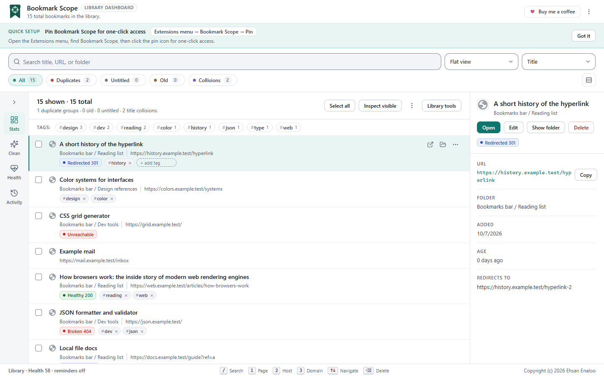
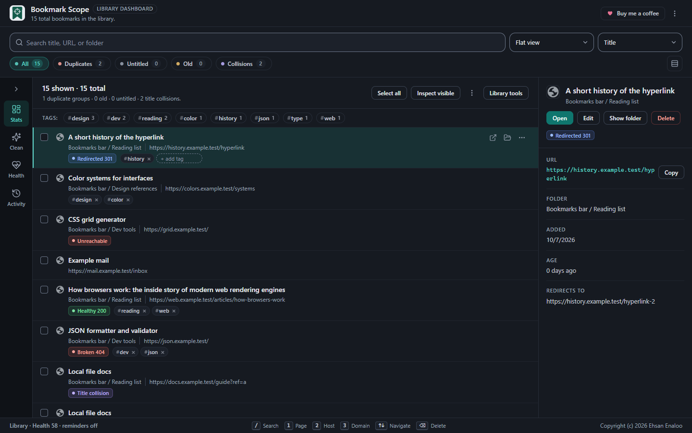
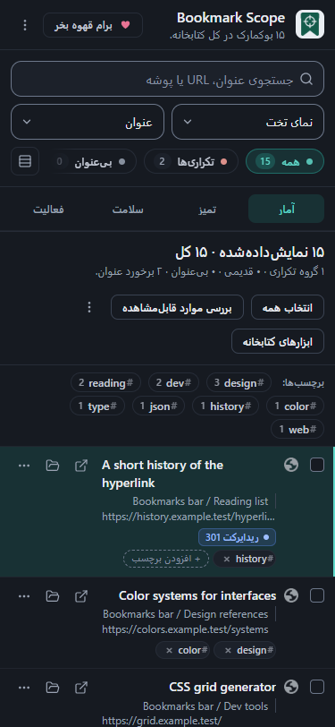

Theme#
Choose System, Light or Dark. Theme buttons appear in the popup’s More controls menu and the dashboard’s More actions menu, and the settings page has a Theme drop-down. System follows the colour scheme of your browser or operating system and changes live when it does.


Colour palette#
Four accent palettes: Teal (default), Blue, Indigo and Neutral. The palette applies to the popup, the dashboard and settings, and a change in one open window updates the others.
Languages#
Bookmark Scope ships 52 interface languages: English plus 51 others. All language files are packaged inside the extension; choosing a language never downloads anything from a website.
Choose a language under Settings → Language. Auto (browser) matches your browser language, including regional variants (for example es-MX uses Spanish), and falls back to English if the language is not supported. The list shows each language in its own script followed by its English name.
| Languages |
|---|
| Amharic, Arabic, Bengali, Bulgarian, Catalan, Chinese (Simplified), Chinese (Traditional), Croatian, Czech, Danish, Dutch, English, Estonian, Filipino, Finnish, French, Gujarati, German, Greek, Hebrew, Hindi, Hungarian, Indonesian, Italian, Japanese, Kannada, Korean, Latvian, Lithuanian, Malay, Malayalam, Marathi, Norwegian, Persian, Polish, Portuguese (Brazil), Portuguese (Portugal), Romanian, Russian, Serbian, Slovak, Slovenian, Spanish, Swahili, Swedish, Tamil, Telugu, Thai, Turkish, Ukrainian, Urdu, Vietnamese |
Right-to-left languages
Arabic, Persian, Hebrew and Urdu are laid out right-to-left. When one is active, the page direction flips and menus, panels and dialogs follow it. Bookmark titles and addresses use automatic text direction per item, so a Hebrew title next to an English URL both read correctly.

How complete are the translations?
- Most interface strings (the popup, dashboard, settings, notifications) are translated in all 52 languages. A string with no translation appears in English.
- Some newer strings, notably in the Library tools dialogs and the newest Settings options, are still being translated. Until they are reviewed they appear in English in languages other than English and Persian.
- Translations beyond English and Persian have not been reviewed by native speakers, so wording may be imperfect.
- Right-to-left layouts have been checked in the dashboard dialogs, but not exhaustively on every screen. In an earlier narrow-width Persian capture the row of filter chips looked clipped at one edge.
Browser metadata#
The extension’s name and description in chrome://extensions come from separate packaged files, one per language, and follow your browser’s display language.
Reading these guides#
This site follows your system colour scheme and has its own Dark mode / Light mode button in the header.